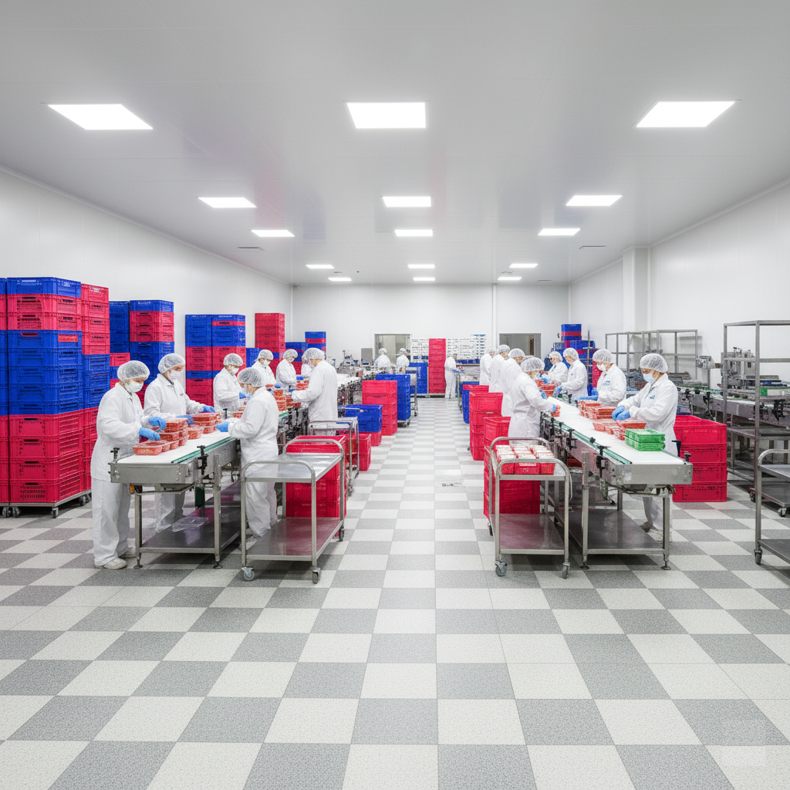
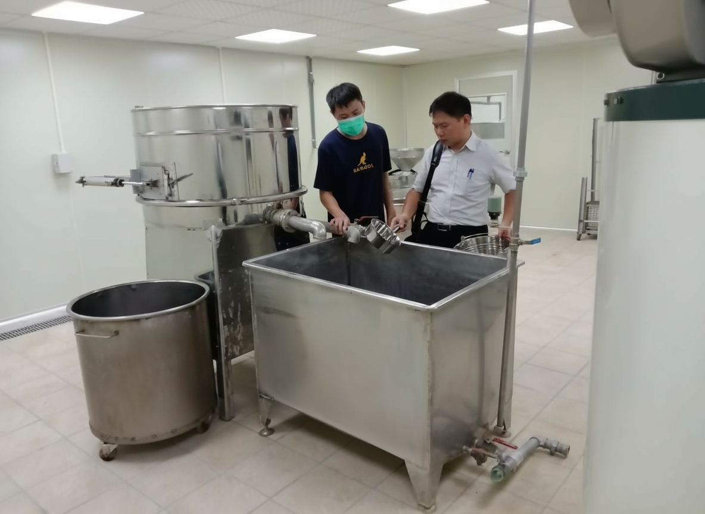

融合20年在地經驗，打破傳統框架，
我們是您實現食品安全藍圖的最強後盾。
SERVICES一站式整合服務
🏢
廠房規劃與設計
3D模擬動線規劃，打破空間限制，創造最高效產能。
⚡
法規極速代辦
精準掌握法規脈動，處理繁瑣文件，確保零失誤。
🤝
在地溝通權威
豐富在地經驗，與主管機關無縫對接，會勘一次過關。
REGULATIONS最新法規動態

Q1: 自行製造販售規範
符合食安法及GHP準則為前提，業者須負完全責任。

Q2: 分裝改包裝定義
若分裝製程影響衛生安全，即屬製造業。

Q3: 作業區門禁管理
門需隨時關閉且密合，防止交叉污染。

Q4: 溫溼度管制基準
訂定合理基準並定期檢查記錄。
PLANNING廠房規劃美學
ROADMAP工廠設立藍圖
用地查核
查核土地是否工業/產業用地，確認地號分區。
查核土地是否工業/產業用地，確認地號分區。
都計審查許可
申請土地分區證明，避免日後違法。
申請土地分區證明，避免日後違法。
公司商號登記
依實際營運型態辦理，取得統編。
依實際營運型態辦理，取得統編。
空間規劃設計
產線動線、結構安全、消防動線規劃。
產線動線、結構安全、消防動線規劃。
建照與使照
官方審核確保建物用途合格，舊建物補正。
官方審核確保建物用途合格，舊建物補正。
設備環保消防
列出設備清單，準備環保/消防/衛生證明。
列出設備清單，準備環保/消防/衛生證明。
準備申請文件
公司資料、產權、建照、設備明細全套整理。
公司資料、產權、建照、設備明細全套整理。
正式遞件
向經發局臨櫃或線上申辦，確認受理窗口。
向經發局臨櫃或線上申辦，確認受理窗口。
聯合會勘
消防局、衛生局共同查驗，需盡速補正。
消防局、衛生局共同查驗，需盡速補正。
核准營運
取得公文，申請水電，正式合法生產。
取得公文，申請水電，正式合法生產。